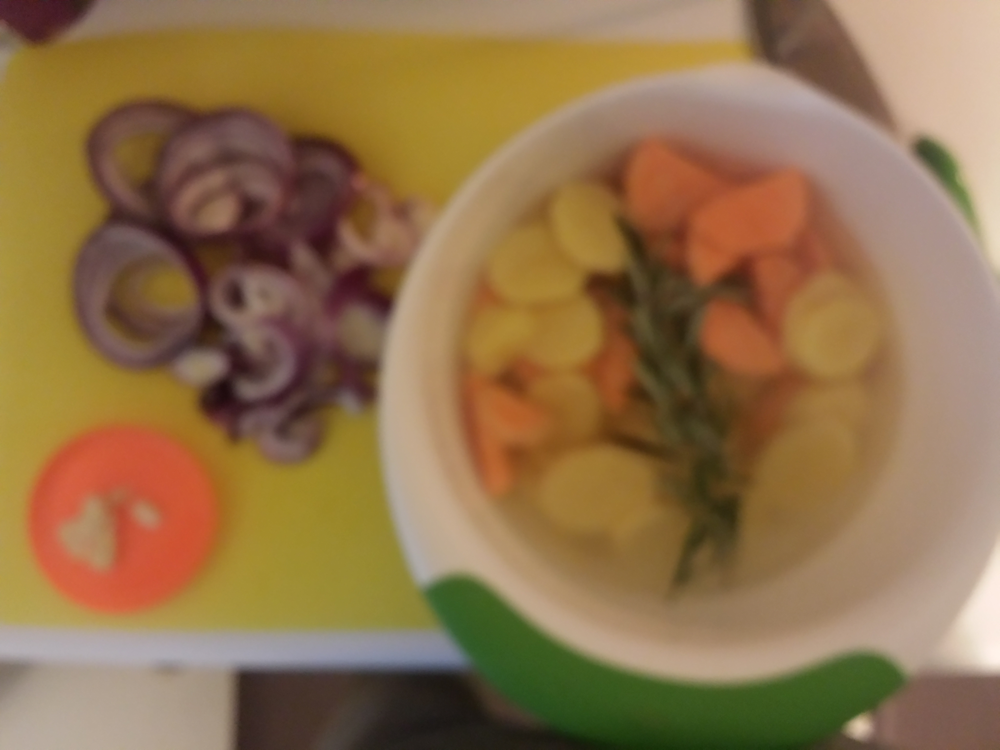

We especially love this recipe because it has both the crunch from the regular potatoes, and the silky sweetness from the sweet potatoes. And who doesn't love caramelized onions? Enjoy!
Notes
serves 4-5
preptime: 25 min
cooktime: 25 min
totaltime: 50 min
Ingredients
- 6 yukon potatoes, sliced
- 1 sweet potato
- 1 onion, sliced
- 1 clove garlic, sliced
- 1 unbroken sprig of rosemary
- 2-3 tsp olive oil
- couple pats of butter
- pinch of salt
- pinch of black pepper
Steps
Peel and slice the all of the potatoes into medium-thick slices. Soak them in a large bowl of salted, luke warm water for 20 minutes.
While the potatoes are soaking, slice the onion into medium slices, and slice the clove of garlic into thin slice.
 Prepping the Potatoes (sorry for the blurriness!)Put a cast iron on high heat, with the olive oil and a couple pats of butter. Put the yukon potatoes and the onions in first, and shake them around around so they are coated.
Then add the sweet potato and continue coating the potatoes on high heat for 5 minutes. Add salt and papper to taste. Put the sprig of rosemary in - leave it just on top, unbroken.
Put pan in the oven at 375 degrees for 20 minutes. When done, take pan out, and enjoy!